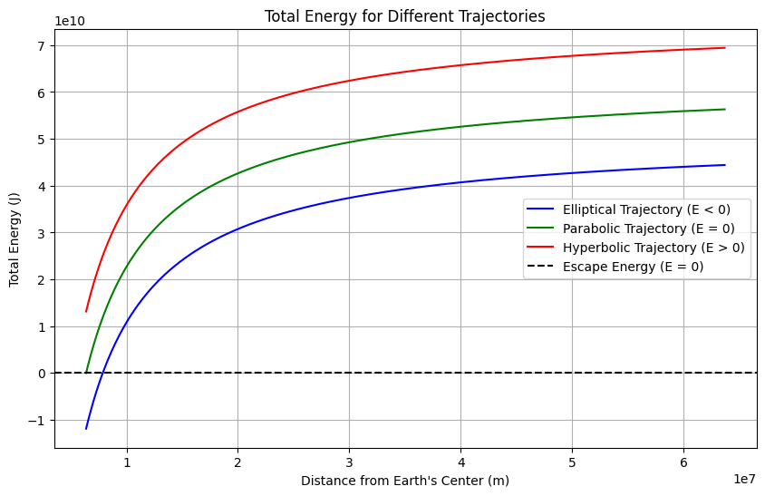

Problem 3
Trajectories of a Freely Released Payload Near Earth
Introduction
When a payload is released from a moving rocket near Earth, its trajectory depends on its initial velocity and altitude. The motion can result in different types of trajectories, such as parabolic, hyperbolic, or elliptical, depending on the payload’s energy. This topic is crucial for satellite deployment, reentry missions, and interplanetary travel planning.
Types of Trajectories
-
Elliptical Orbit: If the payload’s velocity is below the escape velocity \(v_2\), it remains in a closed elliptical orbit around Earth. \(E < 0, \quad v < v_2\)
-
Parabolic Trajectory: If the velocity equals the escape velocity \(v_2\), the payload follows a parabolic trajectory and just escapes Earth's gravitational influence. \(E = 0, \quad v = v_2\)
-
Hyperbolic Trajectory: If the velocity exceeds escape velocity, the payload follows a hyperbolic trajectory and leaves Earth’s gravitational field. \(E > 0, \quad v > v_2\)
The total energy of the payload is given by: \(E = \frac{1}{2} m v^2 - \frac{G M m}{r}\)
where: - \(G\) is the gravitational constant, - \(M\) is Earth’s mass, - \(m\) is the payload’s mass, - \(r\) is the distance from Earth’s center, - \(v\) is the velocity of the payload.

Python Simulation
import numpy as np
import matplotlib.pyplot as plt
from scipy.constants import G
# Constants
M = 5.972e24 # Mass of Earth (kg)
R_Earth = 6.371e6 # Radius of Earth (m)
# Function to compute trajectory
def trajectory(v0, theta, t_max=5000, dt=1):
r = np.array([R_Earth + 400e3, 0]) # Initial position (400 km altitude)
v = np.array([v0 * np.cos(theta), v0 * np.sin(theta)])
trajectory_x, trajectory_y = [r[0]], [r[1]]
for _ in range(int(t_max/dt)):
r_mag = np.linalg.norm(r)
a = -G * M / r_mag**3 * r # Acceleration due to gravity
v += a * dt
r += v * dt
if r_mag < R_Earth:
break # Stop if it impacts Earth
trajectory_x.append(r[0])
trajectory_y.append(r[1])
return trajectory_x, trajectory_y
# Simulate for different initial velocities
velocities = [7000, 11200, 14000] # Below orbital, escape, and above escape velocity
angles = [np.pi/4] # 45-degree release angle
plt.figure(figsize=(10, 8))
for v in velocities:
x, y = trajectory(v, angles[0])
plt.plot(x, y, label=f"v0 = {v} m/s", linewidth=2)
# Plot Earth
earth = plt.Circle((0, 0), R_Earth, color='blue', alpha=0.6, label="Earth")
plt.gca().add_patch(earth)
# Improve visualization
plt.xlabel("x position (m)", fontsize=12)
plt.ylabel("y position (m)", fontsize=12)
plt.title("Trajectories of a Freely Released Payload Near Earth", fontsize=14)
plt.legend(fontsize=12)
plt.grid(True, linestyle="--", linewidth=0.6)
plt.axis('equal')
plt.show()
Discussion
- A payload with velocity below escape velocity will stay in orbit or fall back to Earth.
- At escape velocity, it follows a parabolic trajectory, escaping Earth's gravity.
- If launched at a speed greater than escape velocity, it will follow a hyperbolic trajectory, leaving Earth permanently.
Conclusion
Understanding payload trajectories helps in satellite deployment, reentry planning, and deep-space missions. This simulation provides insight into how initial conditions affect motion in Earth's gravitational field.